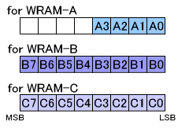

#include <twl/mi.h>u8 MI_GetUsedWramSlot( MIWramPos wram );(define)#define MI_GetUsedWramSlot_A();#define MI_GetUsedWramSlot_B();#define MI_GetUsedWramSlot_C();| wram | WRAM to get information about. |
Returns information about the slots within the specified WRAM that are allocated to some processor. Returns slot values ranging from 0 to 3 for WRAM-A, or slot values ranging from 0 to 7 for WRAM-B and WRAM-C.
Gets information about the slots within the specified WRAM that are allocated to some processor.
The reservation status of the WRAM slots by the processor is irrelevant.
About the return values:
The lower bits of the u8 value indicate slot 0, slot 1, and so on (in order). If a given bit is 1, it means that the corresponding slot is allocated.
For example, if the return value of MI_GetFreeWramSlot( MI_WRAM_B ) is 0xC0 (11000000 in binary), it indicates that WRAM-B slots 0, 1, 2, 3, 4, and 5 have not been allocated by any processor (but they may be reserved) and that slots 6 and 7 have been allocated by one of the processors.

Convenience functions that include the WRAM type in the function name:
MI_GetUsedWramSlot_A(...) is the #define directive of MI_GetUsedWramSlot( MI_WRAM_A, ... ).MI_GetUsedWramSlot_B(...) is the #define directive of MI_GetUsedWramSlot( MI_WRAM_B, ... ).MI_GetUsedWramSlot_C(...) is the #define directive of MI_GetUsedWramSlot( MI_WRAM_C, ... ).
The WRAM manager managed by the ARM9 determines the return value.
The ARM7 gets values from the ARM9 through PXI.
Overview: Work RAM
MI-Related Constants
MI_GetAllocatableWramSlot
MI_GetFreeWramSlot
2008/05/29 Initial version.
CONFIDENTIAL